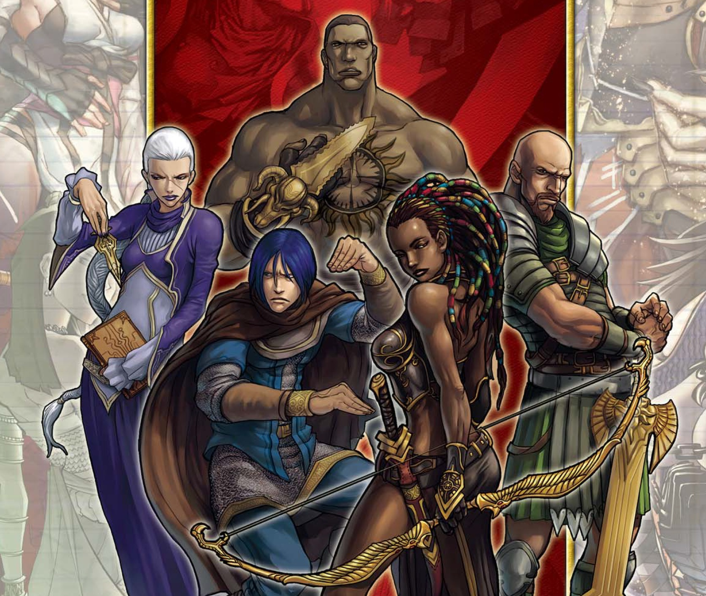
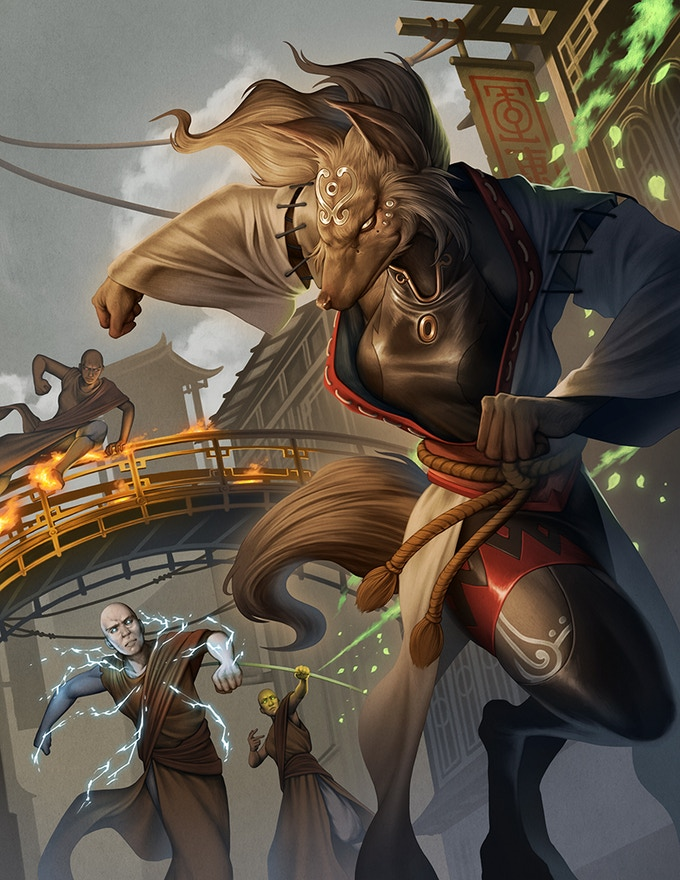
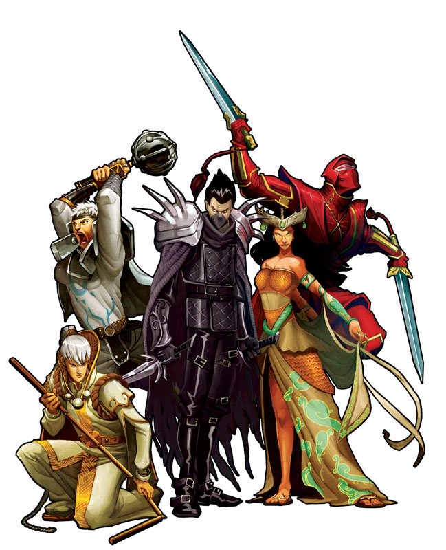
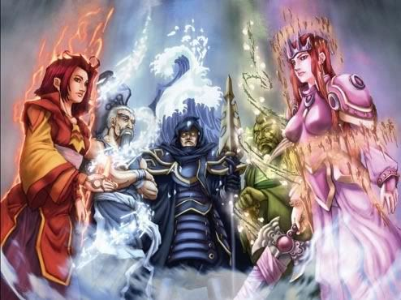
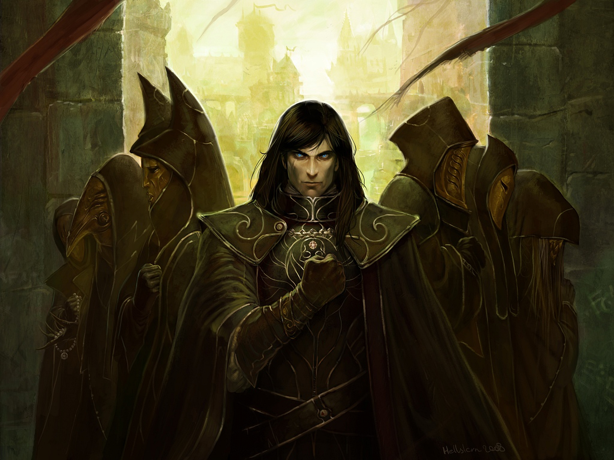
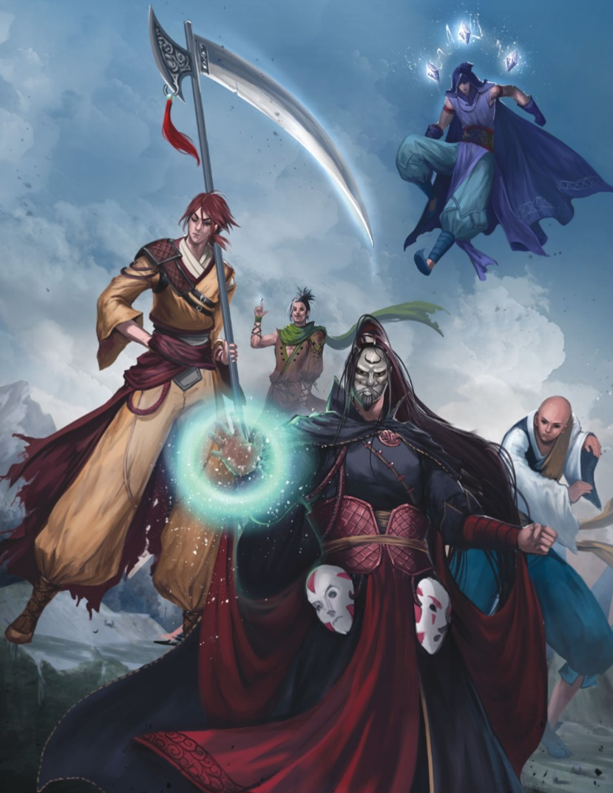

Types of Exalted
-
Solar Slideshow
 -
Lunar Slideshow
 -
Sidereal Slideshow
 -
Dragon Blooded Slideshow
 -
Abyssal Slideshow
 -
Exigent Slideshow

Solars
The Solars are the champions of the unconquered sun and were once the single greatest force in creation. They are the posterchildren of the exalted game, rulers of the first age and it is their return that spurs the setting into a period of possible change. Mechanically they are specialist characters. While they can have a wide variety of interesting abilities what makes the Solars unique is their ability to choose one type of ability and ignore the essence limitations of it. This allows Solar players to be insanely powerful in the direction of their focus, whatever that may be.
Lunars
The Lunar exalted are the champions of Luna, the ever-changing moon god. They were created to be the partners of the Solars and to guard Gaia who Luna dearly loved. While the Lunars have been given incredible powers to change shape, they must be carefull in the wyld lest they become the mindless and terrible monsters known as Chimeras. Lunars one of the most popular options I’ve seen for player characters. They are extremely flexible in their abilities and scope, making them excellent for “jack of all trades” characters. Perhaps what makes them most fun is their ability to shapeshift quickly and easily into a wide variety of creatures or even mix and match animals in a powerful beast man form. This lends a huge degree of unpredictability and potential humor to any game. Mechanically their abilities let them change forms to handle different situations and their abilities are specifically built to apply to numerous situations.
Sidereals
Sidereal exalted are the champions of the five maidens of fate and were created to be the advisors and councilors to the Solar exalted. They rule creation in secret and look into the future to try to find the best and most stable paths forward. The Sidereals are the least known and least played of the celestial exalted. Their powers are heavily timed to the loom of fate and while they are not necessarily over powered, they easily have to potential of completely overturning a planned story with abstract applications of fate manipulation. There is not currently a book detailing them as a playable race in third edition but they make for interesting and powerful plot hooks for the Storyteller to use.
Dragon Blooded
The Dragon Blooded are terrestrial exalted and unlike the others there is no set limit to their numbers. They wield the powers of Gaia as represented by the five elemental dragons and are the current masters of creation. Each dragon blooded is attuned to a specific element, either fire, water, wood, earth, or air. Mechanically the Dragon Blooded have less raw magical power but greater access to magical tools. They also aren’t being hunted as demons by the bulk of the world which is known to have its advantages.
Abbysals
Abyssal Exalted are the result of the divine spark that makes a Solar a Solar being captured, tortured, and twisted into a new form by the Neverborn (the ghosts of the fallen Primordial’s) and their agents. They are the dark reflection of Solars and work to serve their dread lord masters. Mechanically the Abyssals are basically Solars with a different flavor. If Solars are said to have a golden paladin/boy scout vibe then Abyssals are edge lords and goths. They do not currently have a 3rd edition book but deriving rules based on the core/Solar book would not be difficult.
Exigents
Exigent Exalted are the champions of lesser gods who have bartered, bargained, begged, or burgled the power to create an Exalted of their own. Each one is unique to the god she serves and their abilities can vary dramatically as a result. The Exigent Exalted were introduced conceptually in third edition but do not currently have a rule book. Their wildly varying nature makes them a reasonable option for a homebrew character if none of the other exalted really match a player’s concept.